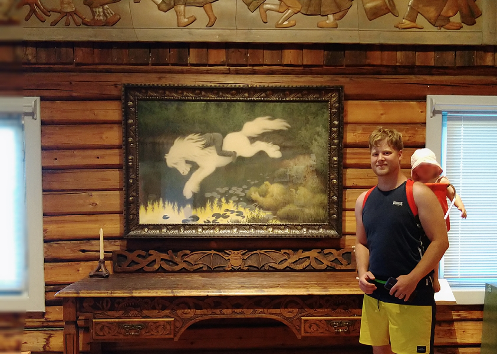

Om Mig

Dennis Bengtsson
Född i april 1992, ursprungligen från Hultsfred, bor numera i nordvästra Skåne.
Jag är gift och far till fyra små duktiga flickor. Som person är jag lugn, eftertänksam och noggrann. Jag uppskattar naturen, gärna tillsammans med familjen. Att sitta och diskutera med goda vänner är också någonting jag uppskattar, men det blir så sällan numera.
Småländsk filosofi
"Sätter du en smålänning på en öde klippa i havet skaver han sig mätt, och giver du honom en get bliver han rik."

Yrke och engagemang
Yrkesliv
Jag är certifierad snickare och utbildad betongarbetare med erfarenhet av både små och stora projekt.
Just nu arbetar jag som snickare på en större byggarbetsplats i Lund, anställd på ett företag med 300 medarbetare.
Engagemang
Lokalsamhället och demokratin är viktiga för mig. Rätten att rösta fritt är en grundläggande princip som jag stöder aktivt.
- Rösträknare: Har tjänstgjort vid 5 val hittills.
- Förtroendeuppdrag: Valnämndsordförande i kyrkoförsamlingen.
"Svenska kyrkan är en plats för reflektion och gemenskap för mig och min familj."